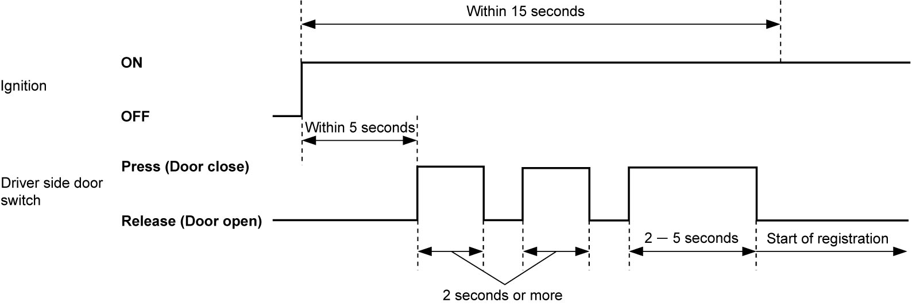
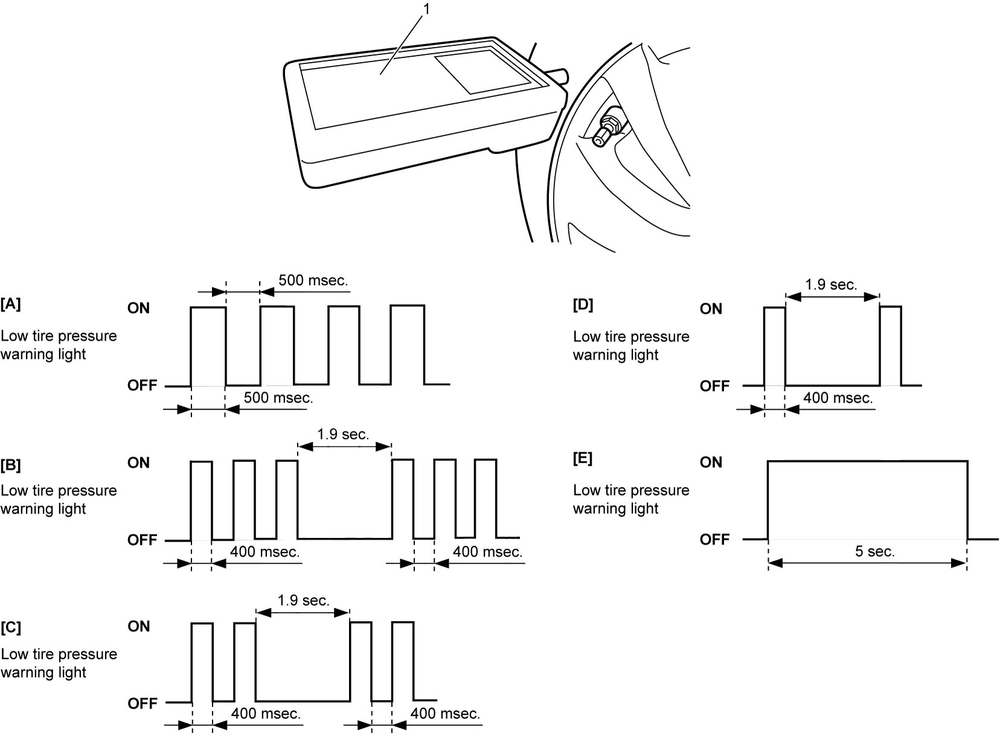

10D
| Registration Procedure for Tire Pressure Sensor ID Code |
NOTE:
Only 4 ID codes of tire pressure sensor can be registered in TPMS control module. Therefore, register only ID codes of tire pressure sensors that are installed on vehicle wheels. If the ID code of tire pressure sensor of any other tire besides the 4 vehicle tires is registered in TPMS control module, TPMS control module detects an abnormal condition in the system when the vehicle is driven for longer than 10 minutes and blinks the low tire pressure warning light for 75 seconds and then the warning light remains lit.
Manual Learning
Not using SUZUKI scan tool
1)Check that all doors are closed and ignition is “OFF”.
2)Open driver side door.
3)Perform Step a) – c) within 15 seconds after changing ignition to “ON”.
a)Press driver side door switch within 5 seconds after changing ignition to “ON”. Keep pressing driver side door switch for 2 seconds.
b)Release driver side door switch and then press driver side door switch for 2 seconds or more.
c)Release driver side door switch and then press driver side door switch for 2 – 5 seconds.


 "Expand image")
4)Using recommended tool (1), activate each tire pressure sensor in order of left-front → left-rear → right-rear → right-front within 180 seconds.
Refer to instruction of recommended tool for activating method of tire pressure sensor.
Refer to instruction of recommended tool for activating method of tire pressure sensor.
Recommended tool
“VT55” or “VT30” made by ATEQ
NOTE:
•People except the worker for activation may disturb transmissions from the tire pressure sensors.
•When tire pressure sensor is activated, ID code of tire pressure sensor is registered automatically in TPMS control module.
•If all 4 tire pressure sensor ID codes are not registered in TPMS control module within 180 seconds, perform the above steps again. Also, it is possible to check the number of tire pressure sensor ID codes received by TPMS control module by observing the flashing pattern of low tire pressure warning light.
•If registration of tire pressure sensor ID codes is not completed within 180 seconds, former ID codes remain in TPMS control module.
•When TPMS control module receives all 4 tire pressure sensor ID codes, TPMS control module turns ON low tire pressure warning light in combination meter for 5 seconds.
•When tire pressure sensor is activated, ID code of tire pressure sensor is registered automatically in TPMS control module.
•If all 4 tire pressure sensor ID codes are not registered in TPMS control module within 180 seconds, perform the above steps again. Also, it is possible to check the number of tire pressure sensor ID codes received by TPMS control module by observing the flashing pattern of low tire pressure warning light.
•If registration of tire pressure sensor ID codes is not completed within 180 seconds, former ID codes remain in TPMS control module.
•When TPMS control module receives all 4 tire pressure sensor ID codes, TPMS control module turns ON low tire pressure warning light in combination meter for 5 seconds.

 "Expand image")
| [A]: | TPMS control module has received no signal from tire pressure sensor | [D]: | TPMS control module has received 3 signals from tire pressure sensor |
| [B]: | TPMS control module has received 1 signal from tire pressure sensor | [E]: | TPMS control module has received 4 signals from tire pressure sensor |
| [C]: | TPMS control module has received 2 signals from tire pressure sensor |
5)Check that low tire pressure warning light in combination meter turns on for 5 seconds. If not, repeat Step 1) – 4).
6)Set ignition “OFF” after registration is completed.
Using SUZUKI scan tool
1)Check that ignition is “OFF”.

 "Expand image")
3)Set ignition “ON”.
4)Select “TPS ID registration” under “Utility” mode of SUZUKI scan tool.
5)Using recommended tool (1), activate each tire pressure sensor in order of left-front → left-rear → right-rear → right-front according to the instructions displayed on SUZUKI scan tool within 180 seconds.
Refer to the instruction of recommended tool for activating method of tire pressure sensor.
Refer to the instruction of recommended tool for activating method of tire pressure sensor.
Recommended tool
“VT55” or “VT30” made by ATEQ
NOTE:
•People except the worker for activation may disturb transmissions from the tire pressure sensors.
•When tire pressure sensor is activated, ID code of tire pressure sensor is registered automatically in TPMS control module.
•When registering tire pressure sensor ID codes using SUZUKI scan tool, former ID codes are cleared. Therefore, if registration is not completed, perform the above steps again.
•When TPMS control module receives all 4 tire pressure sensor ID codes, TPMS control module turns ON low tire pressure warning light in combination meter for 5 seconds.
•When tire pressure sensor is activated, ID code of tire pressure sensor is registered automatically in TPMS control module.
•When registering tire pressure sensor ID codes using SUZUKI scan tool, former ID codes are cleared. Therefore, if registration is not completed, perform the above steps again.
•When TPMS control module receives all 4 tire pressure sensor ID codes, TPMS control module turns ON low tire pressure warning light in combination meter for 5 seconds.
| [A]: | TPMS control module has received no signal from tire pressure sensor | [D]: | TPMS control module has received 3 signals from tire pressure sensor |
| [B]: | TPMS control module has received 1 signal from tire pressure sensor | [E]: | TPMS control module has received 4 signals from tire pressure sensor |
| [C]: | TPMS control module has received 2 signals from tire pressure sensor |
6)Check that low tire pressure warning light in combination meter turns on for 5 seconds. If not, repeat Step 1) – 4).
7)Set ignition “OFF”, and then disconnect SUZUKI scan tool from DLC.
Automatic Learning
1)Set ignition “OFF” and leave ignition “OFF” for 20 minutes or more.
2)Drive vehicle at 25 km/h (16 mile/h) or more for 10 minutes or more.
3)Check that low tire pressure warning light in combination meter turns off. If not, repeat Step 1).
NOTE:
When tire pressure sensor is activated and driving vehicle at 25 km/h (16 mile/h) or more for 10 minutes or more, ID code of tire pressure sensor is registered automatically in TPMS control module.